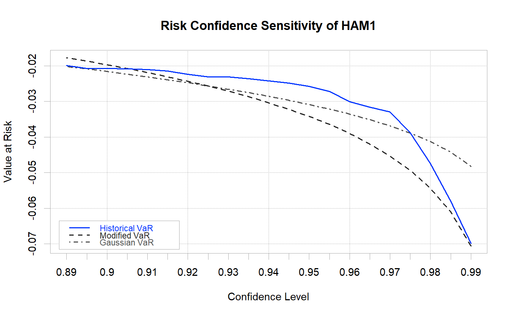

Creates a chart of Value-at-Risk and/or Expected Shortfall estimates by confidence interval for multiple methods.
chart.VaRSensitivity(R, methods = c("GaussianVaR", "ModifiedVaR", "HistoricalVaR", "GaussianES", "ModifiedES", "HistoricalES"), clean = c("none", "boudt", "geltner"), elementcolor = "darkgray", reference.grid = TRUE, xlab = "Confidence Level", ylab = "Value at Risk", type = "l", lty = c(1, 2, 4), lwd = 1, colorset = (1:12), pch = (1:12), legend.loc = "bottomleft", cex.legend = 0.8, main = NULL, ylim = NULL, ...)
| R | an xts, vector, matrix, data frame, timeSeries or zoo object of asset returns |
|---|---|
| methods | one or more calculation methods indicated "GaussianVaR",
"ModifiedVaR", "HistoricalVaR", "GaussianES", "ModifiedES", "HistoricalES".
See |
| clean | method for data cleaning through |
| elementcolor | the color used to draw chart elements. The default is "darkgray" |
| reference.grid | if true, draws a grid aligned with the points on the x and y axes |
| xlab | set the x-axis label, same as in |
| ylab | set the y-axis label, same as in |
| type | set the chart type, same as in |
| lty | set the line type, same as in |
| lwd | set the line width, same as in |
| colorset | color palette to use, set by default to rational choices |
| pch | symbols to use, see also |
| legend.loc | places a legend into one of nine locations on the chart: bottomright, bottom, bottomleft, left, topleft, top, topright, right, or center. |
| cex.legend | The magnification to be used for sizing the legend relative to the current setting of 'cex'. |
| main | set the chart title, same as in |
| ylim | set the y-axis dimensions, same as in |
| … | any other passthru parameters |
This chart shows estimated VaR along a series of confidence intervals for selected calculation methods. Useful for comparing a method to the historical VaR calculation.
Boudt, K., Peterson, B. G., Croux, C., 2008. Estimation and Decomposition of Downside Risk for Portfolios with Non-Normal Returns. Journal of Risk, forthcoming.
data(managers) chart.VaRSensitivity(managers[,1,drop=FALSE], methods=c("HistoricalVaR", "ModifiedVaR", "GaussianVaR"), colorset=bluefocus, lwd=2)